CFD and Wind Tunnel Analysis of Rocket Winglets
Fall 2026 · Aerodynamic Design, CFD & Experimental Validation
View the full project report ↗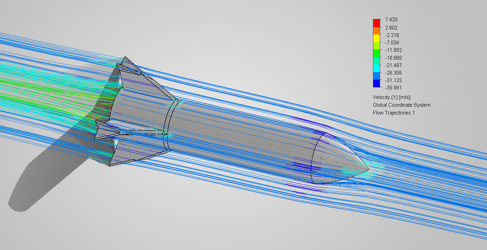
This project investigated how different winglet geometries influence the aerodynamic performance of a rocket through computational fluid dynamics (CFD) and experimental methods in a wind tunnel. Working with a team of four, I helped develop a common rocket body and evaluate nine configurations: eight unique winglet designs and one baseline without winglets.
Winglets are the small, often upward-curving extensions found at the tips of aircraft wings. They can reduce wingtip vortices and induced drag in conventional aircraft, but rockets have different geometries and flight trajectories. This made the aerodynamic effects of winglets on our rocket an interesting design question.
I personally designed two unique winglet configurations, labeled Model 4 and Model 9 in the accompanying report. I modeled the geometries in SOLIDWORKS, examined their airflow behavior through CFD, and compared the resulting drag characteristics with physical wind tunnel measurements.
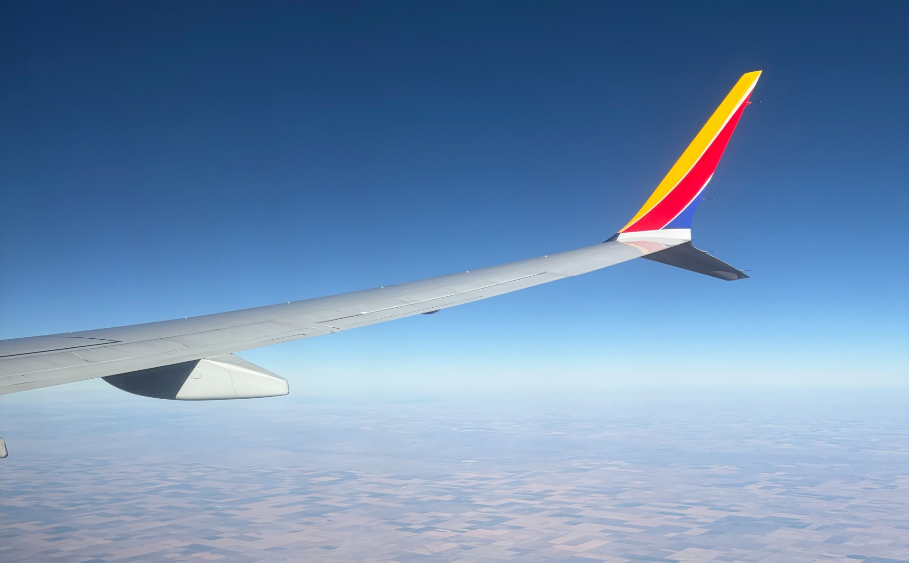
I explored two different approaches to wingtip geometry. For Model 4, I incorporated short, outward projecting wingtip extensions to investigate how localized changes at the fin edges influenced the surrounding airflow. For Model 9, I developed a thin, flatter wingtip profile, anticipating that its narrower frontal presentation could reduce resistance as the rocket moved through the air.
Both designs retained the same main rocket body and primary fin arrangement, allowing the influence of the winglet geometry to be evaluated more directly.
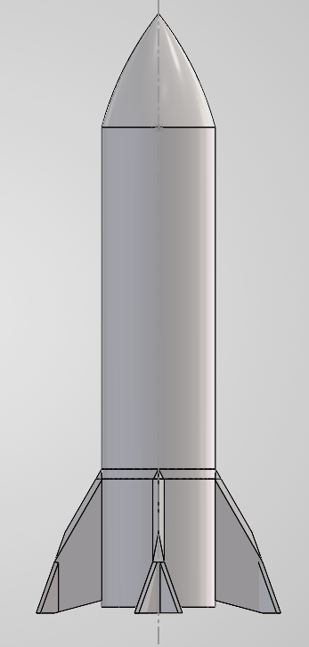
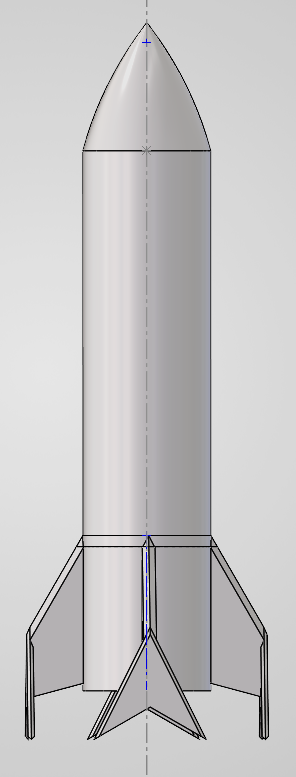
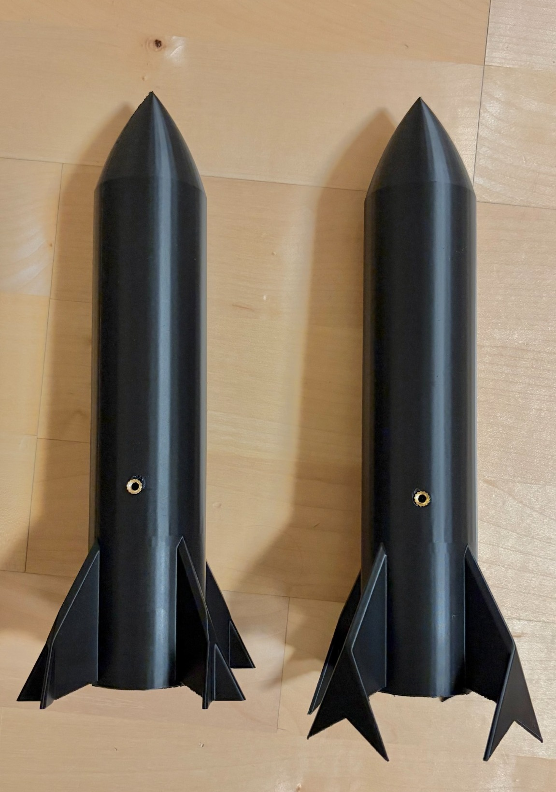
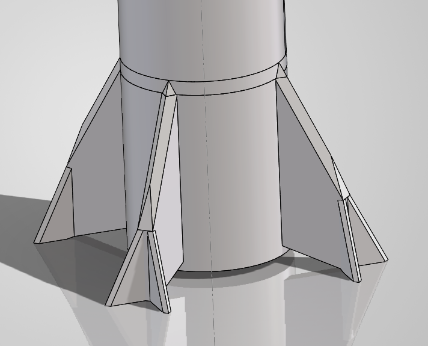
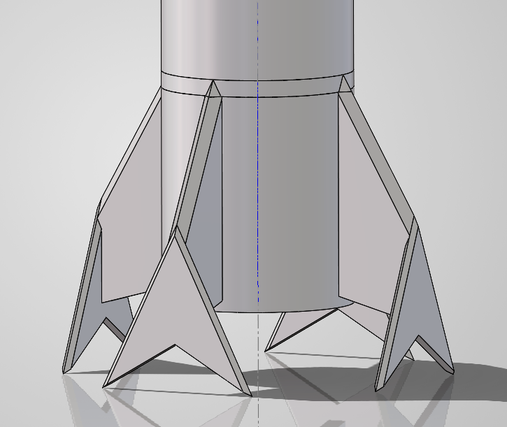
Each configuration was analyzed using SOLIDWORKS Flow Simulation under consistent external-flow boundary conditions. The CFD study used air at 30 m/s, an ambient pressure of 101,325 Pa, an ambient temperature of 293.2 K, and adiabatic wall conditions. Drag and lift were monitored as the simulations iterated toward convergence.
The simulation results were evaluated using pressure contours and flow trajectories to understand how local geometry influenced surface loading and airflow around the fins. The analysis also provided a numerical basis for comparison with the wind tunnel data.
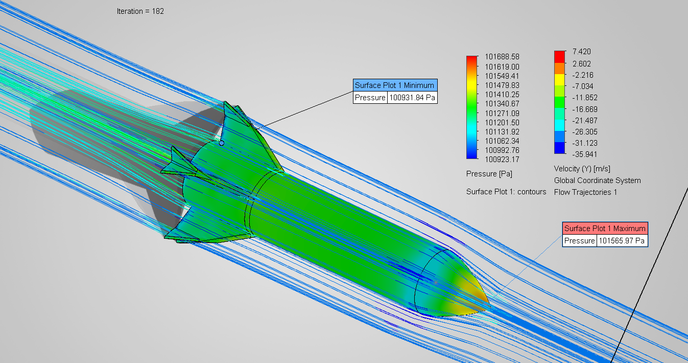
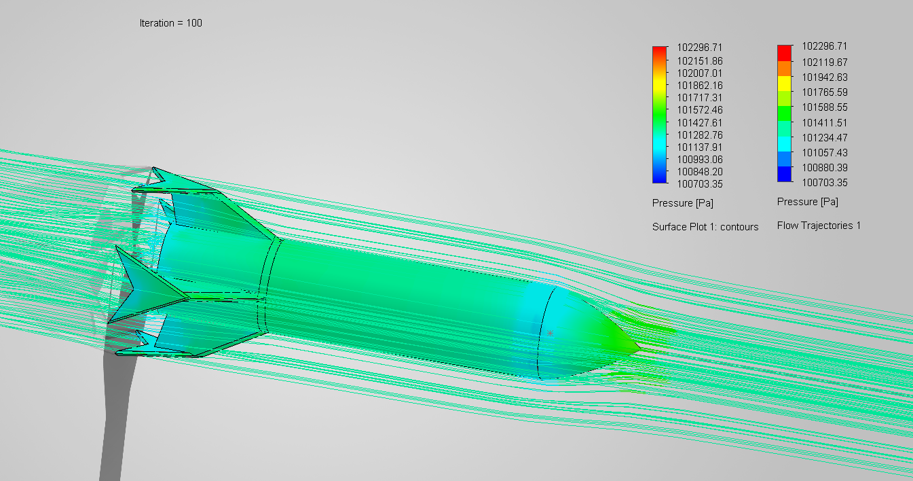
The nine designs were manufactured as 3D-printed PLA prototypes with interchangeable winglet configurations. The fin and winglet layouts shown below were developed as inserts to simplify printability, configuration changes, and repeatable testing.
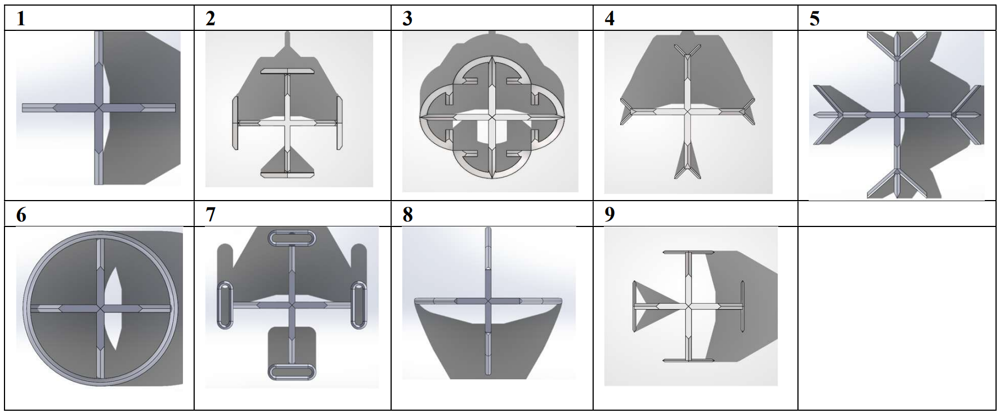
For wind tunnel testing, brass threaded inserts were heat pressed into the rocket bodies, allowing each prototype to be fastened securely to the supporting rod. The models were then exposed to increasing airflow. Lift and drag readings were corrected for the contribution of the mounting rod. Because of the 3D printed construction and low infill, some prototypes exhibited differences in angle of attack that required adjustment during testing. Small remaining variations in alignment introduced uncertainty, particularly in the lift measurements.
The baseline configuration without winglets produced the lowest simulated drag of the nine models. Neither of my designs reduced drag below the baseline, but Model 4 and Model 9 were among the lower drag winglet configurations. At 30 m/s, the reported simulated drag forces were 0.517 N and 0.604 N respectively, compared with 0.340 N for the baseline. The corresponding corrected wind tunnel values were 0.25 N and 0.32 N, versus 0.22 N for the baseline.
Although the simulated and experimental drag values differed in magnitude, both indicated that the baseline performed better than my winglet designs, and both identified the higher drag configurations as less favorable overall. The agreement was qualitative rather than exact across all nine models, reinforcing the importance of experimental validation and careful interpretation of model uncertainty.
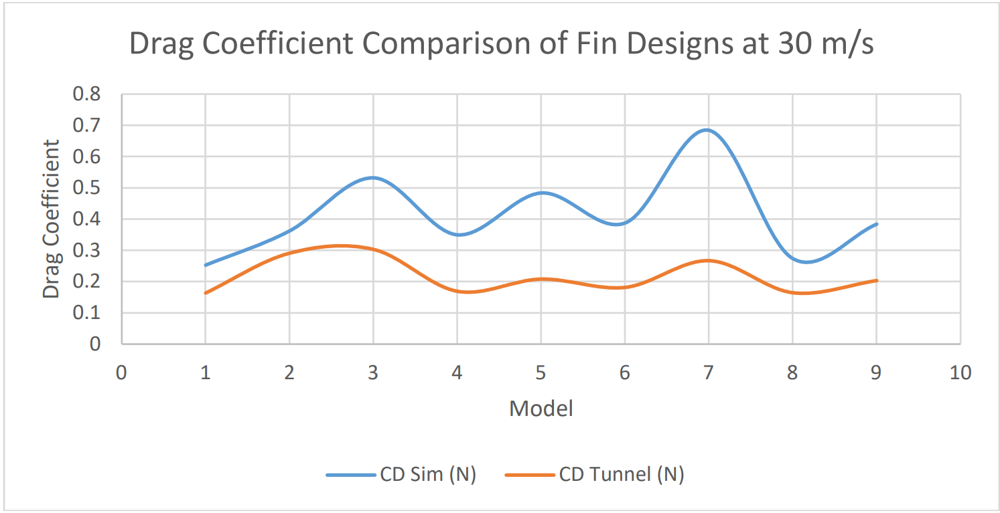
Lift was not the primary basis for ranking designs: the nominally symmetric geometries and approximately zero-degree angle of attack produced relatively small simulated lift forces, while experimental lift was sensitive to mounting orientation and slight changes in angle of attack.
Under the conditions tested, the winglet configurations did not demonstrate an aerodynamic drag advantage over the baseline rocket. This was a useful engineering outcome: the results showed that adding winglets does not inherently improve performance and that geometry must be evaluated for its specific application.
This project strengthened my ability to develop and iterate CAD geometries, interpret CFD pressure and flow results, manufacture test prototypes, and validate numerical predictions against experimental measurements. It also reinforced the importance of distinguishing promising design intuition from measured aerodynamic performance.